Overview
In the early 1900s, no camera could take a color image. From 1905 to 1915, Sergei Mikhailovich Prokudin-Gorskii took pictures across the Russian empire, surveying the vast empire. The Prokudin-Gorskii Photo Collection is a set of these photos, with each image being composed of three seperate images captured using a blue, red, or green color filter. Our goal is to reconstruct the original, color image by aligning the filtered images and assigning them to their respective RGB color channel.
Single Scale Alignment
My first approach was focused on the smaller JPG files. These were aligned using the normalized cross-correlation (NCC) score across a ±15 pixel region in both the x- and y- direction. One optimization that was used was a 15% crop (i.e. calculating the score on the inner 85% in x- and y- directions) for calculating the NCC correlation, avoiding the border effects which are inherent to the np.roll function's output.
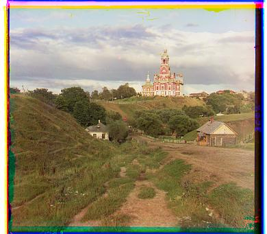
Cathedral
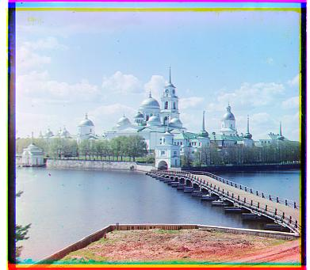
Monastery

Tobolsk
Image Pyramid
However, the nested for loop is extremely inefficienct, operating on O(n^2) time complexity. While it was fine for small images, like the .jpg files, for larger .tif files, it would take a very long time. To solve this, we can do a pyramid alignment. The image is rescaled down in multiple steps recursively until a specified minimum size is reached. From this, we can do our window alignment as a nested for loop, and the subproblem's solution is rescaled and used as the origin for the window alignment at the next size ups. The alignment propogates back to the original resolution, refining the alignment at each step while significantly saving on the necessary computation.
The results on the .tif images are shown below, including both the provided images and additions from the Library of Congress. The only misalignment that occured is with the image of the Emir. Looking at the alignemnt values we can see that the red channel is shifted much more compared to the green channel. This is a result of the red channel overall being much darker than the blue channel, and since the NCC correlation expects similar values for each pixel, the alignment fails.
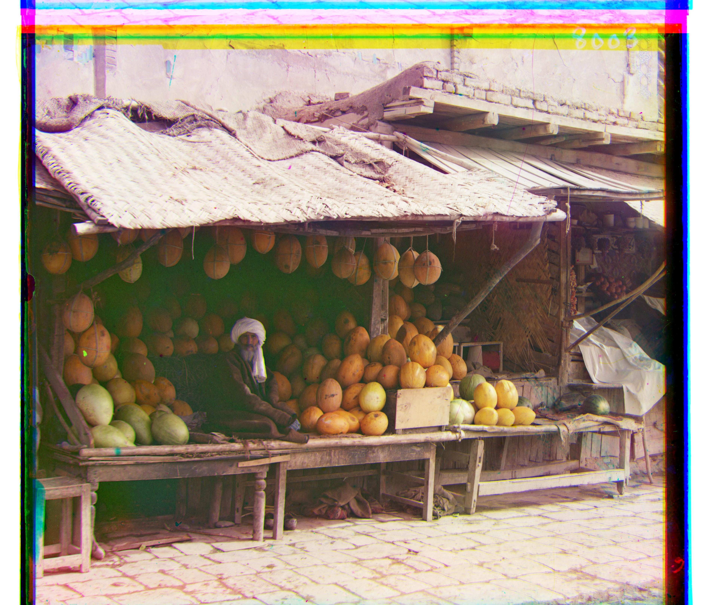
Melons: G: (11, 82); R: (13, 178)

Religious Painting: G: (3, 28); R: (7, 68)
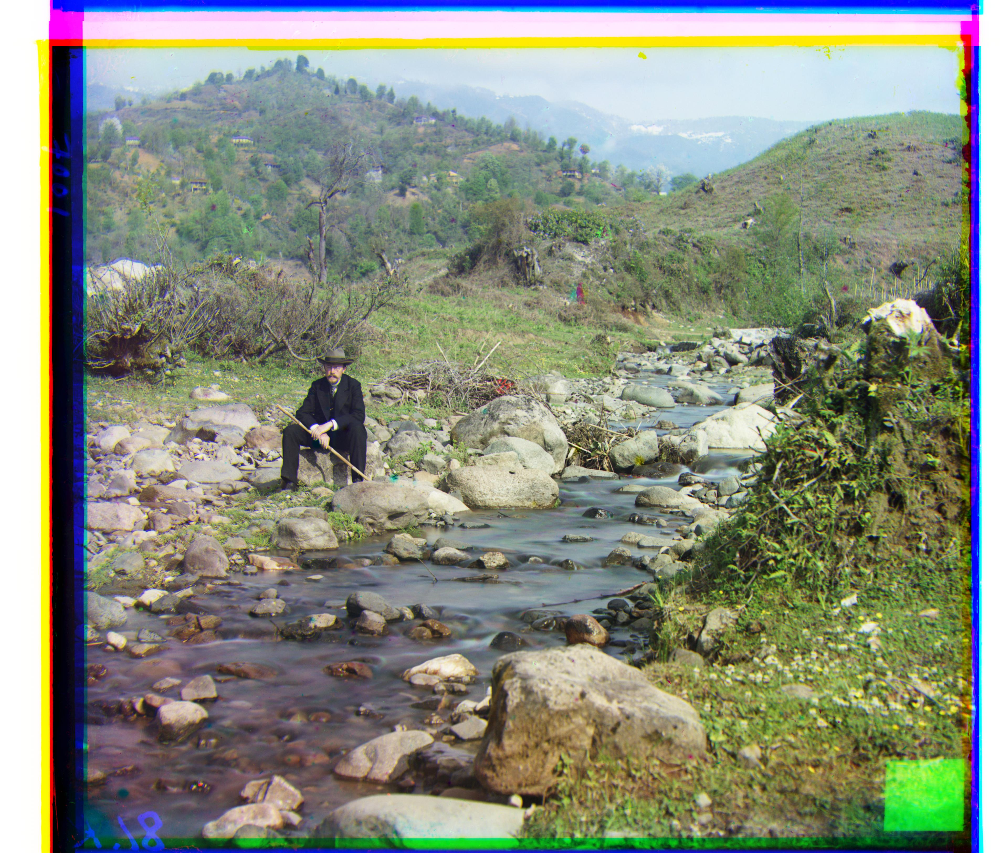
Self Portrait: G: (29, 79); R: (37, 176)
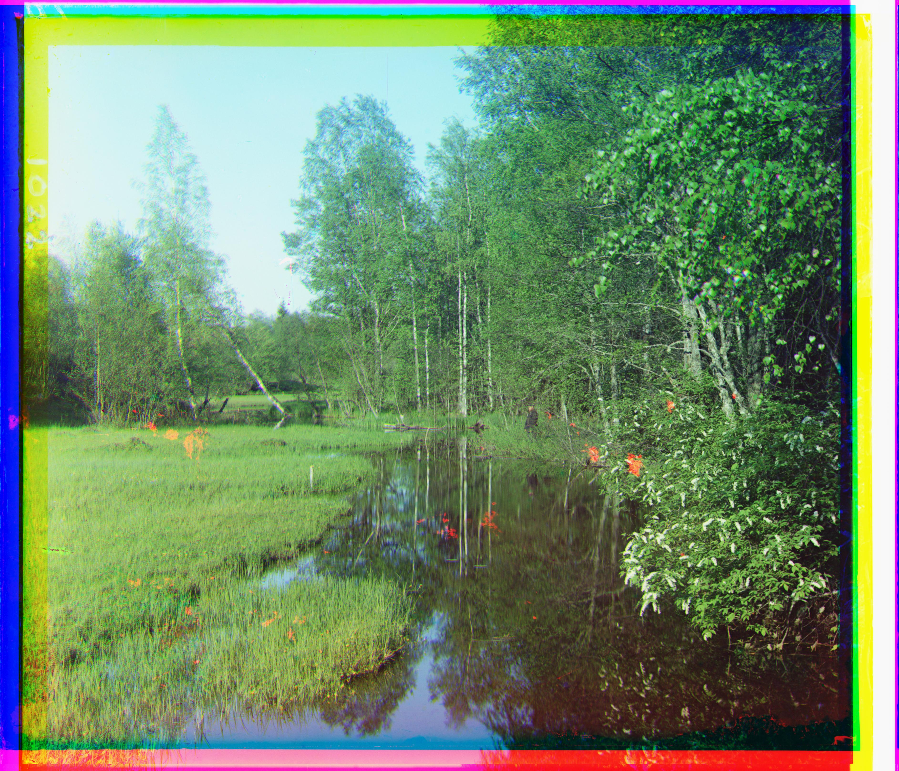
Cheremukha: G: (-94, -30); R: (-83, 22)
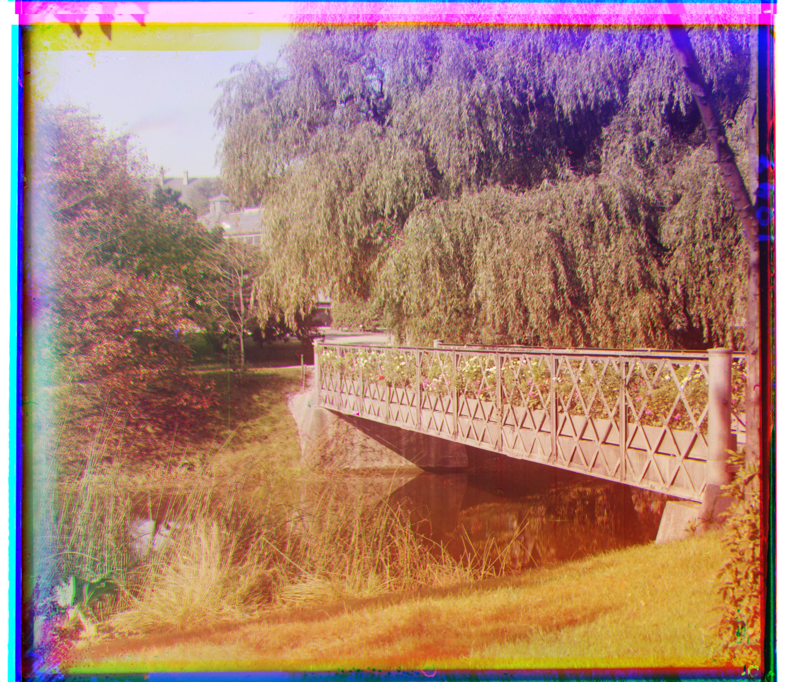
Bridge: G: (-11, 67); R: (-28, 118)
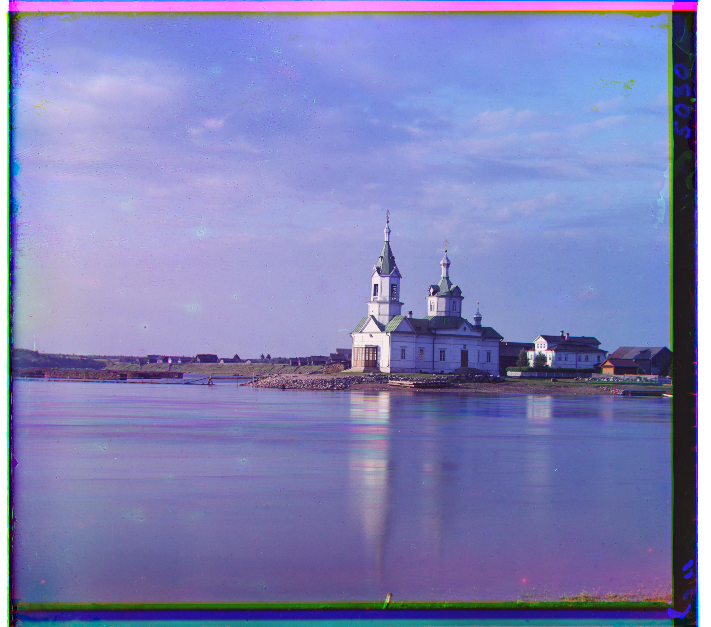
Church: G: (4, 25); R: (-4, 58)
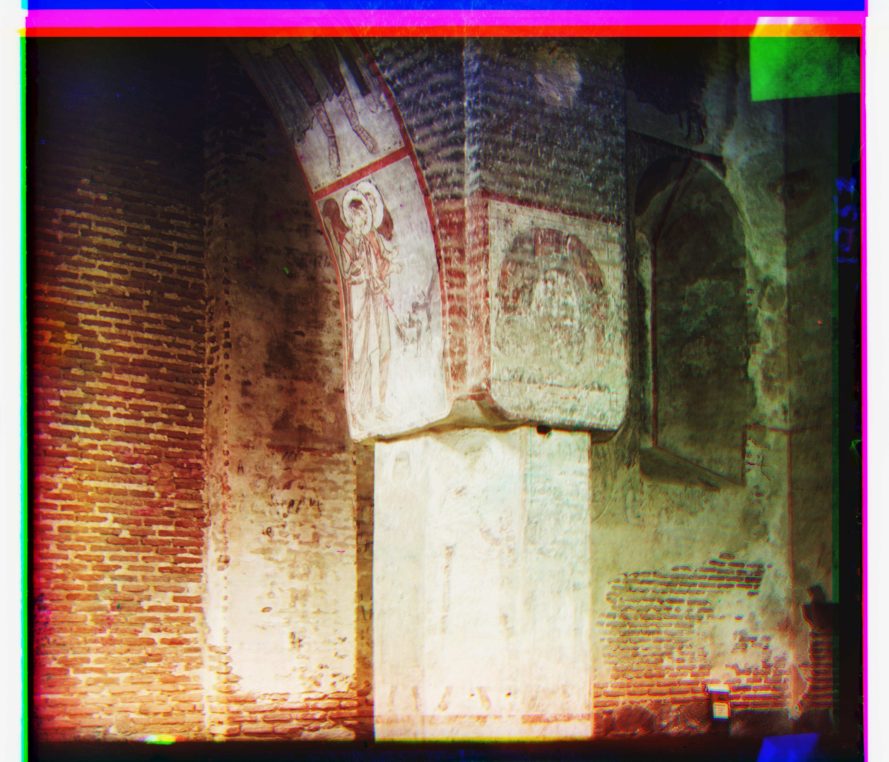
Column: G: (8, 72); R: (-26, 158)

Siren: G: (-6, 49); R: (-25, 96)

Three Generations: G: (14, 53); R: (11, 112)

Wharf: G: (-7, 15); R: (-16, 83)
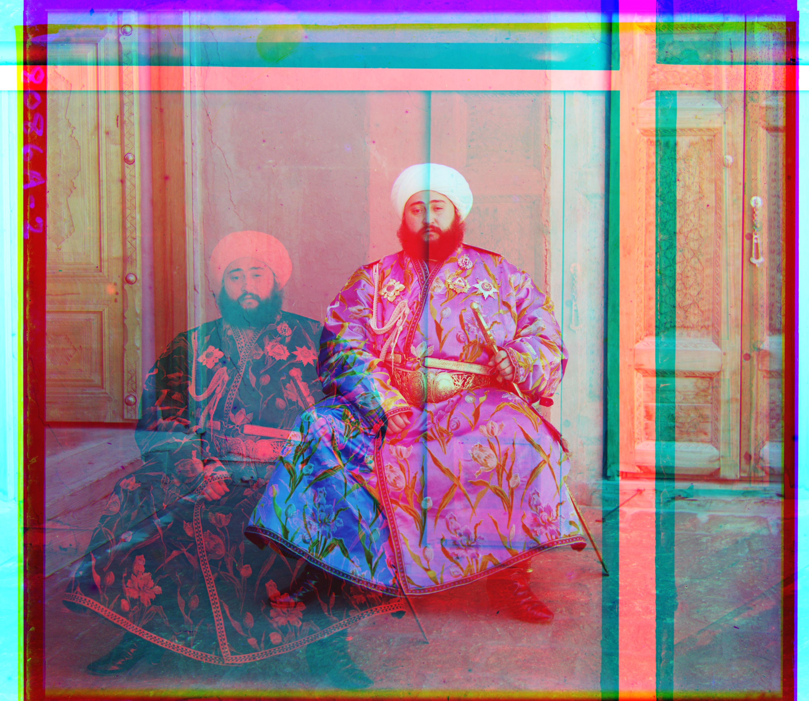
Emir: G: (24, 49); R: (-787, 414)
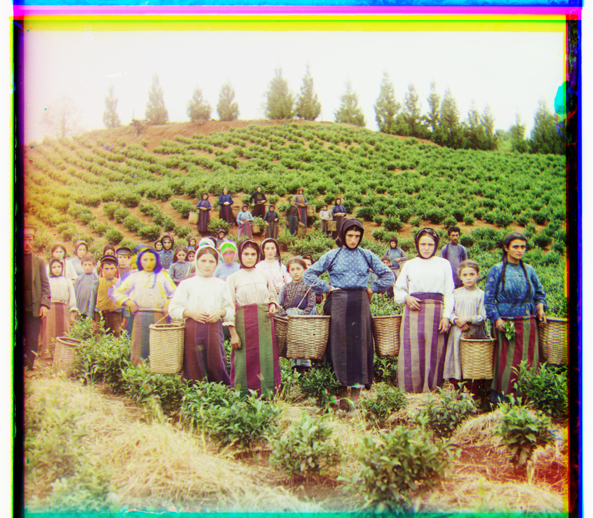
Harvesters: G: (17, 60); R: (13, 124)
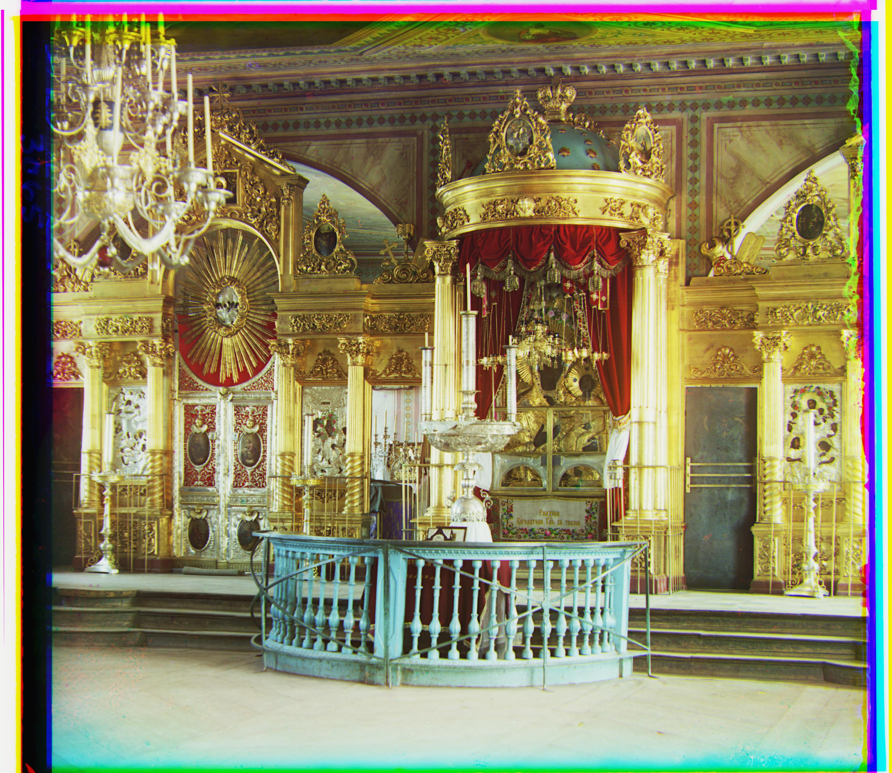
Icon: G: (17, 41); R: (23, 89)

Ilemselga: G: (7, 40); R: (11, 130)